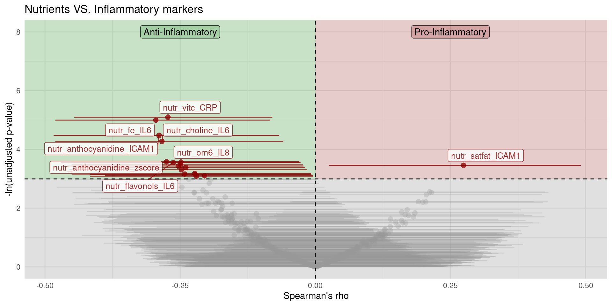
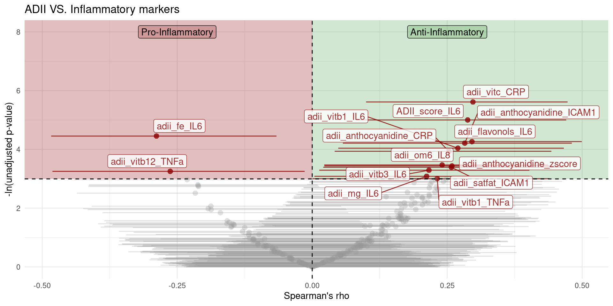

Last updated: 2024-08-05
Checks: 7 0
Knit directory: MMD_Analysis/
This reproducible R Markdown analysis was created with workflowr (version 1.7.1). The Checks tab describes the reproducibility checks that were applied when the results were created. The Past versions tab lists the development history.
Great! Since the R Markdown file has been committed to the Git repository, you know the exact version of the code that produced these results.
Great job! The global environment was empty. Objects defined in the global environment can affect the analysis in your R Markdown file in unknown ways. For reproduciblity it’s best to always run the code in an empty environment.
The command set.seed(20240804) was run prior to running
the code in the R Markdown file. Setting a seed ensures that any results
that rely on randomness, e.g. subsampling or permutations, are
reproducible.
Great job! Recording the operating system, R version, and package versions is critical for reproducibility.
Nice! There were no cached chunks for this analysis, so you can be confident that you successfully produced the results during this run.
Great job! Using relative paths to the files within your workflowr project makes it easier to run your code on other machines.
Great! You are using Git for version control. Tracking code development and connecting the code version to the results is critical for reproducibility.
The results in this page were generated with repository version be2a1db. See the Past versions tab to see a history of the changes made to the R Markdown and HTML files.
Note that you need to be careful to ensure that all relevant files for
the analysis have been committed to Git prior to generating the results
(you can use wflow_publish or
wflow_git_commit). workflowr only checks the R Markdown
file, but you know if there are other scripts or data files that it
depends on. Below is the status of the Git repository when the results
were generated:
Ignored files:
Ignored: .Rhistory
Ignored: .Rproj.user/
Untracked files:
Untracked: README.html
Untracked: code/Utility_functions.R
Untracked: data/Dietary_Object.RData
Untracked: data/Metadata.RData
Untracked: data/Robjects/
Untracked: data/biomarkers.RData
Unstaged changes:
Modified: README.md
Modified: analysis/_site.yml
Deleted: analysis/about.Rmd
Modified: analysis/linear_models.Rmd
Deleted: output/README.md
Note that any generated files, e.g. HTML, png, CSS, etc., are not included in this status report because it is ok for generated content to have uncommitted changes.
These are the previous versions of the repository in which changes were
made to the R Markdown
(analysis/Correlations_Nutrition_Inflammation.Rmd) and HTML
(docs/Correlations_Nutrition_Inflammation.html) files. If
you’ve configured a remote Git repository (see
?wflow_git_remote), click on the hyperlinks in the table
below to view the files as they were in that past version.
| File | Version | Author | Date | Message |
|---|---|---|---|---|
| Rmd | be2a1db | GGalazzoIP | 2024-08-05 | analysis/linear_models.Rmd |
| html | f07357e | GGalazzoIP | 2024-08-04 | Build site. |
| html | f74a9ee | GGalazzoIP | 2024-08-04 | Build site. |
| Rmd | a2be92a | GGalazzoIP | 2024-08-04 | wflow_publish("analysis/Correlations_Nutrition_Inflammation.Rmd") |
| html | b62ab85 | GGalazzoIP | 2024-08-04 | Build site. |
| html | 1dd1e38 | GGalazzoIP | 2024-08-04 | Build site. |
| Rmd | 561ee7c | GGalazzoIP | 2024-08-04 | wflow_publish(c("analysis/index.Rmd", "analysis/Correlations_Nutrition_Inflammation.Rmd", |
In this section we correlate the overall zscore and its components (already zscored and energy adjusted) with the nutrients, food groups and alternate Dietary Inflammatory Index (aDII). The plots below are based on the partial Spearman’s correlation coefficients (pSCC) and their respective (unadjusted) p-values. The reason we chose the pSCC is because it allows to calculate the correlation between variables while removing the effect of known confounders.
In this case we adjusted for Age, Gender, BMI and total Kcal intake (with the exception of the correlations with aDII because is already adjusted for total kcal intake), in this way the make sure that the statistically significant correlation we observe are due to what has been eater rather than how much. Moreover this approach adjust for potential unobserved differences such as different levels of physical activity between obese and non-obese.
In this plots on the x-axis we have the Spearman’s rho and on the y-axis the negative logarithm of the p-value.Each point represent the relationship between a dietary element and an inflammatory biomarker, the lines associated with each point represent the confidence interval of rho, and the horizontal dashed black line represent the significance threshold. So if a comparison has a p-value below 0.05 it will be above the horizontal line and into the green area and the strength of the correlation will determine how far from the center the point will be.
In the volcano plot below:

| Version | Author | Date |
|---|---|---|
| 1dd1e38 | GGalazzoIP | 2024-08-04 |
Looking at the single nutrient intake we see many nutrients usually associated with fruit and vegetables intake being negatively associated with several biomarkers (IL6, IL8, TNFa, and CRP).
On the pro-inflammatory side we can see that the intake of saturated fats increases the levels of ICAM1.
Note on the correlations very close to the significance threshold:
In general for all the volcano plots displayed in this report we should keep in mind that:
With this analysis we aim to explore directly the inflammatory effect of the diet, as measured by the aDII and its components to the inflammatory zscore and its biomarker components.
Important Note: In this analysis the single components of the aDII score have been adjusted for total kcal intake and multiplied by their respective inflammatory index. This means that a high (or highly positive) score is pro-inflammatory and a low (or highly negative) score is anti-inflammatory. More generally, a positive correlation of an item can be as that item having an anti-inflammatory effect and vice-versa a negative correlation having a pro-inflammatory effect.
This interpretation applies to the overall aDII score as well.

| Version | Author | Date |
|---|---|---|
| f74a9ee | GGalazzoIP | 2024-08-04 |
| 1dd1e38 | GGalazzoIP | 2024-08-04 |
Right away we can observe similar results as in the previous correlations. Many of the aDII scores associated with fruits and vegetables intake show an anti-inflammatory effect on several inflammatory biomarkers.
Interestingly, the overall aDII score is positively correlated with IL-6 levels.
Here, the only result against expectations is the aDII score for saturated fat consumption.
The pro-inflammatory effect of iron and vitamin B12 is expected given their inflammatory score of 0.032 and 0.106 respectively.
Note: The same caution introduced in the previous plot should be applied here. For correlations with significant p-values but very close to its alpha of 0.05, more attention should be given to the confidence intervals and if their upper or lower bound is very close to 0.
In general, several associations between nutrient intake (and/or their inflammatory potential) and single inflammatory biomarkers can be observed. regarding the overall scores, only the aDII was associated with IL-6 levels, and the inflammatory Z-score was associated with alcohol and anthocyanidin intake.
To further explore and potentially validate these results, the next section presents the outcomes of linear models based on a selection of the associations identified here.
sessionInfo()R version 4.4.1 (2024-06-14)
Platform: x86_64-pc-linux-gnu
Running under: Ubuntu 22.04.4 LTS
Matrix products: default
BLAS: /usr/lib/x86_64-linux-gnu/openblas-pthread/libblas.so.3
LAPACK: /usr/lib/x86_64-linux-gnu/openblas-pthread/libopenblasp-r0.3.20.so; LAPACK version 3.10.0
locale:
[1] LC_CTYPE=en_GB.UTF-8 LC_NUMERIC=C
[3] LC_TIME=en_GB.UTF-8 LC_COLLATE=en_GB.UTF-8
[5] LC_MONETARY=en_GB.UTF-8 LC_MESSAGES=en_GB.UTF-8
[7] LC_PAPER=en_GB.UTF-8 LC_NAME=C
[9] LC_ADDRESS=C LC_TELEPHONE=C
[11] LC_MEASUREMENT=en_GB.UTF-8 LC_IDENTIFICATION=C
time zone: Europe/Paris
tzcode source: system (glibc)
attached base packages:
[1] stats graphics grDevices utils datasets methods base
other attached packages:
[1] GGally_2.2.1.9000 ggrepel_0.9.5 ggplot2_3.5.1 reshape2_1.4.4
[5] dplyr_1.1.4 here_1.0.1 workflowr_1.7.1
loaded via a namespace (and not attached):
[1] tidyselect_1.2.1 farver_2.1.2 fastmap_1.2.0
[4] TH.data_1.1-2 promises_1.3.0 digest_0.6.36
[7] rpart_4.1.23 lifecycle_1.0.4 cluster_2.1.6
[10] survival_3.7-0 processx_3.8.4 magrittr_2.0.3
[13] compiler_4.4.1 rlang_1.1.4 Hmisc_5.1-3
[16] sass_0.4.9 tools_4.4.1 utf8_1.2.4
[19] yaml_2.3.8 data.table_1.15.4 knitr_1.47
[22] labeling_0.4.3 PResiduals_1.0-1 htmlwidgets_1.6.4
[25] plyr_1.8.9 RColorBrewer_1.1-3 multcomp_1.4-25
[28] polspline_1.1.25 withr_3.0.0 foreign_0.8-86
[31] purrr_1.0.2 BiocGenerics_0.50.0 stats4_4.4.1
[34] nnet_7.3-19 grid_4.4.1 fansi_1.0.6
[37] git2r_0.33.0 multtest_2.60.0 colorspace_2.1-0
[40] scales_1.3.0 MASS_7.3-60.0.1 cli_3.6.3
[43] mvtnorm_1.2-5 rmarkdown_2.27 rms_6.8-1
[46] generics_0.1.3 rstudioapi_0.16.0 httr_1.4.7
[49] cachem_1.1.0 stringr_1.5.1 splines_4.4.1
[52] base64enc_0.1-3 vctrs_0.6.5 Matrix_1.6-5
[55] sandwich_3.1-0 jsonlite_1.8.8 SparseM_1.83
[58] callr_3.7.6 Formula_1.2-5 htmlTable_2.4.2
[61] tidyr_1.3.1 jquerylib_0.1.4 glue_1.7.0
[64] codetools_0.2-19 ggstats_0.6.0 ps_1.7.6
[67] stringi_1.8.4 gtable_0.3.5 later_1.3.2
[70] munsell_0.5.1 tibble_3.2.1 pillar_1.9.0
[73] htmltools_0.5.8.1 quantreg_5.98 R6_2.5.1
[76] rprojroot_2.0.4 Biobase_2.64.0 evaluate_0.23
[79] lattice_0.22-5 highr_0.11 backports_1.5.0
[82] httpuv_1.6.15 bslib_0.7.0 MatrixModels_0.5-3
[85] Rcpp_1.0.12 gridExtra_2.3 nlme_3.1-165
[88] checkmate_2.3.1 whisker_0.4.1 xfun_0.44
[91] fs_1.6.4 zoo_1.8-12 getPass_0.2-4
[94] pkgconfig_2.0.3